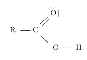
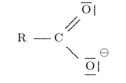
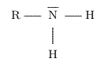
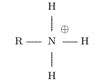

En classe de 1ère, on a découvert les réactions d'oxydo-réduction où des électrons sont échangés un réducteur qui donne des électrons et un oxydant qui en accepte.
On a aussi pu dégager la notion de couple redox : un réducteur qui cède des électrons se transforme en son oxydant conjugué et vice-versa : couple Ox/Red.
Il existe une autre grande famille de réactions où des protons, ou ion hydrogène \( \ce{H+} \), sont échangés : ce sont les réactions acido-basique.
En effet, selon la théorie de Brönsted, un acide est une espèce chimique susceptible de céder un proton ; et une base est une espèce chimique susceptible de capter un proton.
Lorsqu'un acide perd un proton, il se transforme en sa base conjuguée. Symétriquement, lorsqu'une base gagne un proton, elle se transforme en son acide conjugué.
On retrouve ici la notion de couple. Un couple acide-base se note Acide/Base.
Exemples :
\( \ce{HCl = Cl- + H+} \)
\( \ce{CH3COOH = CH3COO- + H+} \)
\( \ce{NH3 + H+ = NH4+} \)
\( \ce{HO- + H+ = H2O} \)
Exemple : couples \( \ce{ CH3COOH/CH3COO-} \) et \( \ce{NH4+/ NH3} \)
$$ \ce{$\underset{\text{acide 1}}{\ce{CH3COOH}}$ + $\underset{\text{base 2}}{\ce{NH3}}$ + <=> $\underset{\text{base 1}}{\ce{CH3COO-}}$ + $\underset{\text{acide 2}}{\ce{NH4+}}$ }$$

L'hydrogène lié à l'oxygène peut facilement être perdu pour former un ion carboxylate :

L'acide éthanoïque se transforme par exemple en sa base conjuguée, l'ion éthanoate : ils forment le couple \( \ce{CH3COOH} \) / \( \ce{CH3COO^-} \).

L'atome d'azote peut facilement gagner un proton pour former un ion ammonium :

L'ammoniac \( \ce{NH3} \) se transforme par exemple en en son acide conjugué, l'ion éthanoate : ils forment le couple \( \ce{NH4+} \) / \( \ce{NH3} \).
Ils forment le couple \( \ce{CO2} \),\( \ce{H2O} \) / \( \ce{HCO3-} \) ; on écrit aussi \( \ce{H2CO3} \) / \( \ce{HCO3-} \).
La molécule d'eau peut réagir comme un acide et perdre un proton pour former l'ion
hydroxyde \( \ce{HO-} \) :
\( \ce{H2O = H+ + HO- } \)
Mais elle peut aussi réagir comme une base et gagner un proton pour former l'ion
oxonium \( \ce{H3O+} \) :
\( \ce{H2O + H+ = H3O+ } \)
L'eau appartient donc 2 couples acide/base : \( \ce{H3O+} \) / \( \ce{H2O} \) en tant que base, et \( \ce{H2O} \) / \( \ce{HO-} \) en tant qu'acide.
Les espèces qui peuvent jouer un rôle d'acide et de base sont des espèces amphotères.
C'est par exemple aussi le cas de l'ion hydrogénocarbonate qui appartient aux couples :
\( \ce{CO2} \),\( \ce{H2O} \) / \( \ce{HCO3-} \) en tant que base
\( \ce{HCO3-} \) / \( \ce{CO3^2-} \) en tant qu'acide
| Notions et contenus | Capacités exigibles |
|---|---|
| Transformation modélisée par des transferts d’ion hydrogène \( \ce{H+} \) : acide et base de Brönsted,
couple acide-base, réaction acide-base.
Couples acide-base de l’eau, de l’acide carbonique, d’acides carboxyliques, d’amines Espèce amphotère. |
Identifier, à partir d’observations ou de données expérimentales, un transfert d’ion hydrogène, les
couples acide-base mis en jeu et établir l’équation d’une réaction acide-base.
Représenter le schéma de Lewis et la formule semi-développée d’un acide carboxylique, d’un ion carboxylate, d’une amine et d’un ion ammonium. Identifier le caractère amphotère d’une espèce chimique. |